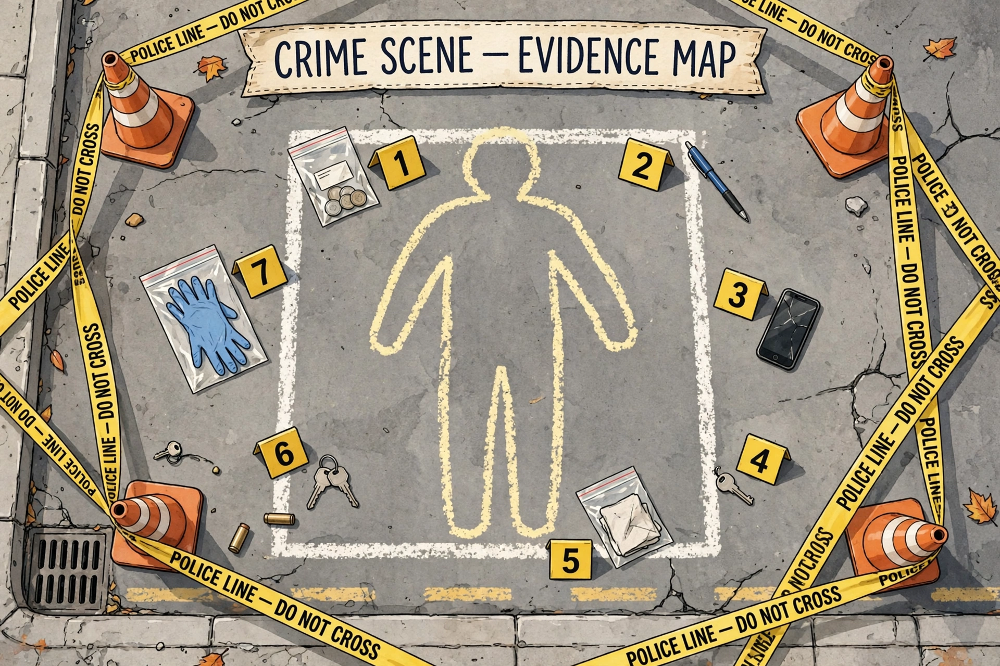

Murder is the unlawful killing of another human without justification or valid excuse, especially the unlawful killing of another human with malice aforethought. This state of mind may, depending upon the jurisdiction, distinguish murder from other forms of unlawful homicide, such as manslaughter. Manslaughter is killing committed in the absence of malice, brought about by reasonable provocation, or diminished capacity. Involuntary manslaughter, where it is recognised, is a killing that lacks all but the most attenuated guilty intent, recklessness.

Most societies consider murder the most serious crime, punishable by long imprisonment or, in some jurisdictions, death. At common law, murder consists of an actus reus — the unlawful killing of a human being under the King's (or Queen's) peace — and a mens rea of malice aforethought, traditionally expressed as an intention to kill or to cause grievous bodily harm. The traditional "year and a day rule," under which death had to occur within a year and a day of the act, has been abolished in most common-law jurisdictions.
Many United States jurisdictions divide murder into degrees: first-degree murder is planned and deliberate, or committed during certain felonies (felony murder); second-degree murder covers other intentional killings. Other categories include mass murder, serial murder, contract killing, infanticide and filicide. Killing in war is generally governed by the laws of armed conflict rather than murder law, provided combatants follow the rules of engagement.
The United Nations Office on Drugs and Crime estimated about 464,000 intentional homicide victims worldwide in 2017, a global rate of 6.1 per 100,000. Rates vary enormously: parts of Latin America and southern Africa record the highest rates, while Western Europe and East Asia have rates below 1 per 100,000. In the United States the homicide rate was about 6.5 per 100,000 in 2021.
Homicide · Manslaughter · Capital punishment · Assassination